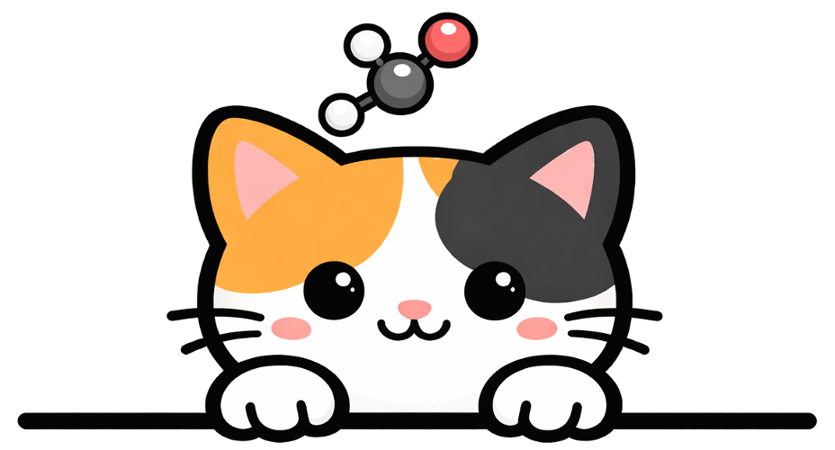

CatFlow
Co-generation of Slab–Adsorbate Systems via Flow Matching
Overview
CatFlow co-generates slab structures and adsorbate configurations at the all-atom level via flow matching. A factorized representation reduces the modeling dimensionality of the slab-adsorbate system, and CatFlow outperforms baselines on both de novo generation and structure prediction over OC20. The model also demonstrates the capability for global minimum search.
Live demo
Pick an adsorbate, optionally specify a slab composition, and watch the model generate physically consistent slab–adsorbate systems below. Runs against a public GPU server — no install required.
Generation & relaxation
CatFlow generates a slab–adsorbate system through a continuous-and-discrete flow-matching trajectory, then relaxes the structure with UMA-s-1p1. Relaxation drives the sample toward a thermodynamic local minimum.

Adsorption energy before and after relaxation. A negative relaxed Eads indicates a thermodynamically favorable adsorption configuration.
Interactive viewer
Drag to rotate · scroll or pinch to zoom · atoms coloured by element.
Concept

Co-generation trajectory

Citation
If you find CatFlow useful, please cite:
@article{kim2026catflow,
title = {CatFlow: Co-generation of Slab--Adsorbate Systems via Flow Matching},
author = {Kim, Minkyu and Kim, Nayoung and Kim, Honghui and Ahn, Sungsoo},
journal = {arXiv preprint arXiv:2602.05372},
year = {2026}
}